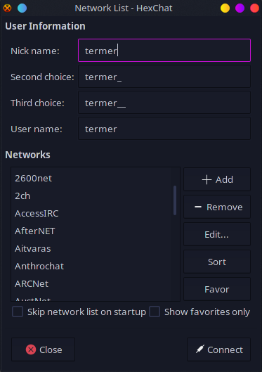

Creating your own chat server for you and your friends is easy, and you don't have to rely on a complicated system to get started. IRC is an old but gold protocol, and has clients for basically every operating system made since the 80s, with many powerful modern ones on Linux, Mac, and Windows.
Having a chat server for you and your friends makes it impossible for a group of arbitrarily appointed moderators to deplatform you for wrong-think, and gives you greater freedom of communication.
Installing an IRCd
An IRCd is short for "IRC daemon", which just means an IRC server. The most easy IRCd to set up is Ergo.
The first thing you need to do is create a new user for the server to be run by. This is good practice for installing software/servers manually, as it give you more fine-grained control over which permissions the application has.
useradd -m ergo -s /bin/bash
Next, we want to switch to our newly created ergo user and create the server directory.
sudo -i -u ergo
mkdir server
You can find the latest release of Ergo on its GitHub latest release page.
There are several platforms available, but you want to choose Linux, most likely linux-x86_64.
Once you have selected the correct package, copy its URL and replace the release url with the package URL (still as the ergo user):
wget https://github.com/ergochat/ergo/releases/download/v2.7.0/ergo-2.7.0-linux-x86_64.tar.gz
tar -xf ergo-2.7.0-linux-x86_64.tar.gz
mv ergo-2.7.0-linux-x86_64/*
rm -r ergo-2.7.0-linux-x86_64*Executing ls -l should now yield something like this:
-rw-r--r-- 1 ergo ergo 118825 Jun 8 00:51 CHANGELOG.md
-rw-r--r-- 1 ergo ergo 1983 May 31 01:48 README
-rw-r--r-- 1 ergo ergo 41440 Jun 8 00:42 default.yaml
drwxr-xr-x 2 ergo ergo 4096 Jul 1 09:01 docs
-rwxr-xr-x 1 ergo ergo 9654272 Jun 8 00:53 ergo
-rw-r--r-- 1 ergo ergo 1753 May 31 01:48 ergo.motd
drwxr-xr-x 2 ergo ergo 12288 Jul 1 09:01 languages
-rw-r--r-- 1 ergo ergo 39722 Jun 8 00:42 traditional.yamlIf you see something similar to the above, that means Ergo is installed, although not quite ready to run yet.
Configuring Ergo
Now that Ergo is installed, you want to configure it to fit the needs of your group.
The configuration in this section is tailored towards a small group of people, and less for a possibly large network,
but it should work for any size of group.
First thing, make sure you're still using the ergo user, and are in the ~/server directory.
If you aren't, you can run the following to get back there:
sudo -i -u ergo
cd ~/serverTo start configuring, we need to copy some files:
cp default.yaml ircd.yaml
cp ergo.motd ircd.motdNext, generate certificate files for TLS:
./ergo mkcertsErgo comes with a default configuration file with detailed documentation that can be used to guide you through the configuration process. This guide will help you setup the server for a typical use-case, but if you see any settings that you would like to change along the way, go ahead and change them, as long as you know what you're doing.
The next steps involve editing the newly copied ircd.yaml file. If you do not know how to edit text files from the command line,
you can use nano, which is very simple, using arrow keys to navigate, CTRL+O to save, and CTRL+X to exit.
Another option is vim, which is a much more powerful text editor, but has a learning curve. It is only recommended for this guide if you already know how to use it.
Lastly, you can copy the ircd.yaml file to a text editor on your computer and edit it with a GUI text editor of your choice.
If that is what you choose to do, you may want to just download the file from Ergo's GitHub,
edit it on your computer, clear the ircd.yaml file on the server, and then paste the contents from your computer into the blank file.
No matter how you do it, the next steps assume you can edit the configuration file.
Note:
The options highlighted in this section are not a complete overview of all options.
Instead, the options shown are the ones which are most relevant to a small network.
You should read over the configuration file yourself if you are curious about everything you can change.
Network and server names
One of the first properties in the config file is network name. You can change this to whatever you like, as it will show up as the name when you connect to the server.
# network configuration
network:
# name of the network
name: "Land-Chat"Change the server name to your server's domain name.
# server configuration
server:
# server name
name: "example.org"Network password
The next step is optional, depending on if you want your network password protected or not. The benefit of password protection is fairly obvious; nobody can connect to your network unless you gave them the password. If you're wanting to run a public network which anyone can join and create a channel, you want to skip this, but for personal setups, it is highly recommended.
Generate a password to use by executing the following:
./ergo genpasswd
It will ask you to enter a password and confirm it, then you will be given a hashed password.
Copy this password, and paste it into the following field (also removing the # before the password: line):
# password to login to the server, generated using `ergo genpasswd`:
password: "<your hashed password>"Message of the day (MotD)
Change the MotD (Message of the Day) file to the one you copied earlier:
# motd filename
# if you change the motd, you should move it to ircd.motd
motd: ircd.motdFeel free to edit ircd.motd to your heart's content. Its contents will be sent to clients when they connect to the network.
IP limits
For security purposes, you might want to limit the amount of client connections per IP.
For a private network, 4 is likely the maximum amount of connections you will have per IP, so that is a safe value.
If your network is password protected, this is less of an issue, since the only people connecting will be people who have the password.
The following is the default, but you can change it to be whichever value you like:
# IP-based DoS protection
ip-limits:
# whether to limit the total number of concurrent connections per IP/CIDR
count: true
# maximum concurrent connections per IP/CIDR
max-concurrent-connections: 16IP cloaking
Traditionally, IRC networks expose users' IP addresses to everyone. This is not a good practice for privacy, however.
With Ergo, IP cloaking is enable by default. You can enable or disable it if you like, and change how it looks to users.
In this case, netname was changed to "chad".
# IP cloaking hides users' IP addresses from other users and from channel admins
# (but not from server admins), while still allowing channel admins to ban
# offending IP addresses or networks. In place of hostnames derived from reverse
# DNS, users see fake domain names like pwbs2ui4377257x8.irc. These names are
# generated deterministically from the underlying IP address, but if the underlying
# IP is not already known, it is infeasible to recover it from the cloaked name.
# If you disable this, you should probably enable lookup-hostnames in its place.
ip-cloaking:
# whether to enable IP cloaking
enabled: true
# whether to use these cloak settings (specifically, `netname` and `num-bits`)
# to produce unique hostnames for always-on clients. you can enable this even if
# you disabled IP cloaking for normal clients above. if this is disabled,
# always-on clients will all have an identical hostname (the server name).
enabled-for-always-on: true
# fake TLD at the end of the hostname, e.g., pwbs2ui4377257x8.irc
# you may want to use your network name here
netname: "chad"Password enforcement adjustments for HexChat (and possibly other clients)
Ergo offers account registration to allow users to do things like use history and bouncer features, register channels, etc.
In clients such as HexChat, server passwords may conflict with account passwords, so the following setting should be enabled if you wish to use accounts with clients such as HexChat.
Note that this could under some circumstances be considered a security hazard, as a user with an account does not need to know the server password to connect,
although that user would have needed to register an account before the server had a password, and then a password would need to have been set after the fact, so this can be considered a very small concern if your setup has always had a password.
Also keep in mind that this setting has no effect if your network does not even have a password at all.
# some clients (notably Pidgin and Hexchat) offer only a single password field,
# which makes it impossible to specify a separate server password (for the PASS
# command) and SASL password. if this option is set to true, a client that
# successfully authenticates with SASL will not be required to send
# PASS as well, so it can be configured to authenticate with SASL only.
skip-server-password: trueMulticlient, always-on clients, history, etc
Traditionally, IRC servers have no message history, and once you close your client, you cannot receive messages, and are not shown to be online at all.
Ergo includes functionality to allow users to both receive history, and keep their clients "online" even after they have left.
It also allows multiple clients to connect to the same account.
If you are running a private network for friends, you should set always-on and auto-away to opt-out,
to have all users with accounts to appear as if they are online at all times, and be able to receive messages when they are offline.
For a public network, keep everything as their default values, since you probably do not want randoms having this by default.
If for some reason you do not want any of these features at all, you can set enabled to false, but this is not recommended.
Below are the recommended values for a private network (e.g. for friends) where users with accounts will be able to receive messages and history while they are offline.
# multiclient controls whether Ergo allows multiple connections to
# attach to the same client/nickname identity; this is part of the
# functionality traditionally provided by a bouncer like ZNC
multiclient:
# when disabled, each connection must use a separate nickname (as is the
# typical behavior of IRC servers). when enabled, a new connection that
# has authenticated with SASL can associate itself with an existing
# client
enabled: true
# if this is disabled, clients have to opt in to bouncer functionality
# using nickserv or the cap system. if it's enabled, they can opt out
# via nickserv
allowed-by-default: true
# whether to allow clients that remain on the server even
# when they have no active connections. The possible values are:
# "disabled", "opt-in", "opt-out", or "mandatory".
always-on: "opt-out"
# whether to mark always-on clients away when they have no active connections:
auto-away: "opt-out"
# QUIT always-on clients from the server if they go this long without connecting
# (use 0 or omit for no expiration):
#always-on-expiration: 90dVHosts
IP cloaking was mentioned previously, and somewhat related to that, Ergo includes "vhost" functionality, which allows users to set a custom IP/host string. This is mostly for cosmetic value, and does not interfere with operators being able to see actual IP addresses for banning, but if you do not want it enable for some reason, you can disable it.
# vhosts controls the assignment of vhosts (strings displayed in place of the user's
# hostname/IP) by the HostServ service
vhosts:
# are vhosts enabled at all?
enabled: trueChannels
Channels are where everyone on an IRC network talk. By default, anyone can create a channel, and anyone with an account can register one.
The difference between a normal channel and a registered one is that the registered one will preserve the operator status of the person who created,
whereas a normal channel's owner will lose operator status if they leave the channel or disconnect from the network.
There are various settings for channels available, but the defaults are suitable for a private network with trust among users, or where you just want anyone to have the ability to create a channel.
Below are the default values:
# channel options
channels:
# modes that are set when new channels are created
# +n is no-external-messages and +t is op-only-topic
# see /QUOTE HELP cmodes for more channel modes
default-modes: +nt
# how many channels can a client be in at once?
max-channels-per-client: 100
# if this is true, new channels can only be created by operators with the
# `chanreg` operator capability
operator-only-creation: false
# channel registration - requires an account
registration:
# can users register new channels?
enabled: true
# restrict new channel registrations to operators only?
# (operators can then transfer channels to regular users using /CS TRANSFER)
operator-only: false
# how many channels can each account register?
max-channels-per-account: 15Operators (administrators, etc)
The IRC term for an administrator or another privileged user is "operator", or "oper" for short.
Ergo's opers have different permissions that can be granted to them, and are defined in "classes", basically groups of permissions under a name.
For example, "chat-moderator" and "server-admin" are defined in the default configuration:
# operator classes
oper-classes:
# chat moderator: can ban/unban users from the server, join channels,
# fix mode issues and sort out vhosts.
"chat-moderator":
# title shown in WHOIS
title: Chat Moderator
# capability names
capabilities:
- "kill"
- "ban"
- "nofakelag"
- "roleplay"
- "relaymsg"
- "vhosts"
- "sajoin"
- "samode"
- "snomasks"
# server admin: has full control of the ircd, including nickname and
# channel registrations
"server-admin":
# title shown in WHOIS
title: Server Admin
# oper class this extends from
extends: "chat-moderator"
# capability names
capabilities:
- "rehash"
- "accreg"
- "chanreg"
- "history"
- "defcon"
- "massmessage"
The above can be kept with their default values, but you are free to modify them or create any new classes that are appropriate for your setup.
Next, let's actually create an operator account:
# ircd operators
opers:
# default operator named 'gigachad'; log in with /OPER gigachad <password>
"gigachad":
# which capabilities this oper has access to
class: "server-admin"
# custom whois line
whois-line: is the server administrator
# custom hostname
vhost: "gigachad"
# normally, operator status is visible to unprivileged users in WHO and WHOIS
# responses. this can be disabled with 'hidden'. ('hidden' also causes the
# 'vhost' line above to be ignored.)
hidden: false
# modes are modes to auto-set upon opering-up. uncomment this to automatically
# enable snomasks ("server notification masks" that alert you to server events;
# see `/quote help snomasks` while opered-up for more information):
#modes: +is acjknoqtuxv
# operators can be authenticated either by password (with the /OPER command),
# or by certificate fingerprint, or both. if a password hash is set, then a
# password is required to oper up (e.g., /OPER dan mypassword). to generate
# the hash, use `ergo genpasswd`.
password: "<your oper password>"
This is a modified version of the default oper entry. The account name is "gigachad", but you can change it to anything.
Replace <your oper password> with a password generated by ./ergo genpasswd, and you will have a new oper account to use.
Note that to log into an oper account, clients have to enter /OPER <oper name> <oper password> each time they log in.
This can be automated by most clients by setting the command to be executed when the client logs in.
In the case of HexChat, you can edit your network and add the command to the Connect commands tab of the menu.
You can copy everything from "gigachad" to the end of the line, paste it again, and change the name to create another oper account.
Another, less privileged example of an oper is shown as a comment below the above configuration snippet.
Chat history
Traditionally, IRC networks do not store, relay, or handle chat history in any way.
On a privacy standpoint, this is a good thing, since chats are entirely ephemeral and handled by clients.
On a practicality standpoint, this is a bad thing, since people have to keep a client connected 24/7 to see message history.
For normalfriends, this can be a big problem, not only because having to stay online 24/7 is just annoying or infeasible,
but also because they are likely used to chat platforms that handle history for them.
With this in mind, enabling history is a good idea if you want to move friends over to IRC, and will make things a lot more pleasant for private networks.
Ergo's history configuration group is very long, so it is encouraged to read over it yourself.
This section will go over the most important pieces of that configuration group.
History is not endless (unless you want it to be), and the amount that can be stored for channels is configurable:
# how many channel-specific events (messages, joins, parts) should be tracked per channel?
channel-length: 2048History is already enabled by default, but that just means it is being collected, not relayed by default. To relay history to clients when they connect, change the following to the amount of messages that you think is appropriate:
# number of messages to automatically play back on channel join (0 to disable):
autoreplay-on-join: 250History older than a certain time can be configured to be deleted or be inaccessible. The default cutoff time is 1 week, but this is configurable as well.
# options to delete old messages, or prevent them from being retrieved
restrictions:
# if this is set, messages older than this cannot be retrieved by anyone
# (and will eventually be deleted from persistent storage, if that's enabled)
expire-time: 1w
By default, Ergo only stores chat history in memory, so when the server restarts, all history is lost. If you wish to have chat history persist beyond restarts, you must store it in a MySQL database:
# options to store history messages in a persistent database (currently only MySQL).
# in order to enable any of this functionality, you must configure a MySQL server
# in the `datastore.mysql` section.
persistent:
enabled: true
# store unregistered channel messages in the persistent database?
unregistered-channels: true# connection information for MySQL (currently only used for persistent history):
mysql:
enabled: false
host: "localhost"
port: 3306
# if socket-path is set, it will be used instead of host:port
#socket-path: "/var/run/mysqld/mysqld.sock"
user: "ergo"
password: "hunter2"
history-database: "ergo_history"
timeout: 3s
max-conns: 4
# this may be necessary to prevent middleware from closing your connections:
#conn-max-lifetime: 180sFor privacy reasons, you may want to allow users to delete their own messages in history, or export their messages to JSON:
# options to control how messages are stored and deleted:
retention:
# allow users to delete their own messages from history?
allow-individual-delete: true
# if persistent history is enabled, create additional index tables,
# allowing deletion of JSON export of an account's messages. this
# may be needed for compliance with data privacy regulations.
enable-account-indexing: trueSpam reduction
Most IRC networks have measures in place to reduce chat spam. By default, "fakelag" is enabled in Ergo, and that can deal with most aggregious chat spam.
If you are running a private network where user trust is high, you can disable it so that there are no limits on the speed that messages can be sent.
# fakelag: prevents clients from spamming commands too rapidly
fakelag:
# whether to enforce fakelag
enabled: true
# time unit for counting command rates
window: 1s
# clients can send this many commands without fakelag being imposed
burst-limit: 5
# once clients have exceeded their burst allowance, they can send only
# this many commands per `window`:
messages-per-window: 2
# client status resets to the default state if they go this long without
# sending any commands:
cooldown: 2sStarting and using your server
Now that Ergo is both installed and configured, you can actually start using it!
Starting the server
First thing, make sure you're still using the ergo user, and are in the ~/server directory.
If you aren't, you can run the following to get back there:
sudo -i -u ergo
cd serverStarting the server is done in one command:
./ergo run
It will stay online until you close the terminal, or press CTRL+C. Don't worry, the next section goes over how to make it run like a normal server with a SystemD service.
If you have not already, make sure the port 6697 is not blocked on your server. If you are using UFW as your firewall,
you need to run ufw enable 6697 (not as the ergo user, of course).
If you make and configuration changes while the server is running, you can apply them without restarting by typing /rehash as an operator.
Connecting to the server
To use IRC, you of course need an IRC client. There are many choices available, but the most widely used for Windows and Linux is HexChat.
On Mac, you have a slightly nicer option with Textual, although you have to compile it from source if you want to use it for free.
A more user-friendly and modern client choice is TheLounge, which is explained in the last section of this guide, if you want to look into it.
Connecting with HexChat is very easy. When you start it, you will see something like this:

From there, you should click + Add and name the server whatever you like (so you can find it on the server list).
Once you have created a new server and named it, select it and click Edit....
A menu will show up like the one below. Change the domain to whatever domain your server is running on,
and make sure to put in your server password if you set one.
Once you're done editing the network, click (X) Close, select your network from the network list, and click Connect.
If all is well, you should be connected!

The process is very similar on Textual.
Create a new network and connect to it. Note that it will ask if you want to connect even though the certificate is unsigned.
This is due to the self-signed certificates generated for the server, and is not a problem or security vulnerability, it is just a little annoying.
Surviving restarts with a SystemD service
In the beginning of the last section, Ergo was started by simply running ./ergo run, but this is only suitable for testing.
To have a proper server setup, you need to run it as a service. This can be achieved via a SystemD service.
Before creating your service file, make sure you are in ~/server as the ergo user.
Once you have done that, create a file called start.sh with the following content:
#!/bin/bash
./ergo runSave the file, then mark it as executable:
chmod +x start.shNow, create a file called ergo.service with the following content:
[Unit]
Description=Ergo IRC server
After=network.target
# If you are using MySQL for history storage, comment out the above line
# and uncomment these two instead (you must independently install and configure
# MySQL for your system):
# Wants=mysql.service
# After=network.target mysql.service
[Service]
Type=simple
User=ergo
WorkingDirectory=/home/ergo/server
ExecStart=/home/ergo/server/start.sh
ExecReload=/bin/kill -HUP $MAINPID
Restart=on-failure
LimitNOFILE=1048576
# Uncomment this for a hidden service:
# PrivateNetwork=true
[Install]
WantedBy=multi-user.targetYou now have your service file, but it is not installed yet. To install it, switch to your normal user, and execute the following lines to install, enable, and start the SystemD service:
ln -s /home/ergo/server/ergo.service /etc/systemd/system/ergo.service
systemctl enable ergo
systemctl start ergoErgo is now installed and running as a service, and will automatically start when the system boots.
Registering accounts and channels
Account and channel registration were mentioned multiple times in this guide, and are indeed very important parts of the modern IRC ecosystem. You can connect to most IRC networks and talk without creating an account, but you will not be able to reserve your nickname or register channels, so it is important to register an account.
Registering an account with NickServ
First, make sure you are connected to your IRC network.
Once you are, type /nickserv help to make sure NickServ (the registration system) is working propertly.
If all is well, type the following, replacing <your password> with the password you want to use:
/nickserv register <your password>
At this point, you are now registered!
The final step is to configure authentication with your client.
In HexChat, all that needs to be done is changing Login method to SASL (username + password), and entering your NickServ password that you used earlier into the password field:
In Textual, open up your network in the menu, and click Identity under Server Properties.
Enter your password in Personal Password, and check Wait for identification before joining channels.
You will now be logged into your account when you connect to your network.
Registering channels with ChanServ
Once you have an account registered, you can register channels with ChanServ.
To do so, join the channel you want to register, then type the following, replacing <your channel> with the name of the channel you want to register:
/chanserv register #<your channel>You are now the channel owner, and are free to appoint operators, administrators, etc for it. When you go offline, you won't lose ownership, and you cannot be removed as the owner unless you unregister the channel later.
Moderation
Like any chat, there will come a point where you need to use moderation tools to keep things under control.
Many IRC setup guides do not go over moderation, so it can be stressful when operators need to actually use moderation tools.
The main difference between IRC and other chat systems in terms of moderation is the difference between channel bans and network bans.
Channel ban keeps a person out of channel a channel, whereas a network ban keeps a person out of the entire network.
Understanding masks
Bans are applied "masks", which are formatted pieces of text that contain a user's nick (username), their realname value, and their IP address or host.
This is what a mask looks like: nick!~nick-dude@127.0.0.1.
In bans, asterisks can be used as wildcards, which is useful for banning IP address ranges, patterns of nicknames, or whatever else you can think of.
A ban on the nick person, for example, would look like this: person!*@*.
A ban on anyone with the IP address 127.0.0.1 would look like this: *!*@127.0.0.1
Discovering real IPs
Even if IP cloaking is enabled on your network, you can still obtain real IP addresses/hosts if you are an operator.
See the Operators part of the configuration section of this guide on how to become an operator.
To find out a user's real IP, simply type /whois along with the user's nick, and you will see information about the user, along with their real IP address/host.
/whois is not a command that is exclusive to operators, but it does not reveal as much information to non-operators.
Banning someone from the network
Any netword-wide moderation action requires being an operator. See the Operators part of the configuration section of this guide on how to become an operator.
Banning someone from the network is achieved with the /kline command. To see more info on the command, type /helpop kline.
To ban a nick from the network:
/kline andkill <nick>!*@*To ban an IP address or host from the network:
/kline andkill *!*@<IP or mask>To unban a mask, you can use the /unkline command with the mask you want to unban.
Banning someone from a channel
Channel owners, administrators, and operators can ban people from channels. This is not the same as banning someone from the network, since it only has an effect on one channel. Additionally, a channel operator is not the same as a network operator.
To ban someone in a channel, type the following in that channel, replacing <mask> with the user's mask:
/mode +b <mask>
Note that this will only ban the user, not kick them immediately.
You will want to run /kick along with the user's nick to also kick them.
To unban a user, run the command above, but replace the + with a -.
You can see who is banned in a channel by typing /banlist.
Muting people in a channel
By default, anyone can speak in an IRC channel. To change this, you must be a channel owner, administrator, or operator.
Channels, along with users, have modes, which modify their behavior. There is a special mode for channels called m (moderated) which requires users to be privileged in some way to talk.
To set a channel as moderated, type the following in the channel:
/mode +m
Now, users must be an owner, administrator, operator, or be voiced to talk in the channel
This be reversed by typing the command above, but changing the + to a -.
To voice a user, run the following, replacing <nick> with the user's nick:
/mode +v <nick>Unvoice the user by typing the above command, but replacing the + with a -.
Appointing channel administrators and operators
Assuming you a channel owner, you can appoint both administrators and operators.
If you are only an operator, you may only appoint operators.
The difference between administrator and operator is mainly that administrators cannot have their privileges taken away by operators, only owners.
To appoint an administrator, type the following, replacing <nick> with the user's nick:
/mode +a <nick>To appoint an operator, type the following, replacing <nick> with the user's nick:
/mode +o <nick>
You can also use /op and /deop on most clients to appoint and remove an operator.
To remove administrator or operator status, run either of the above commands, but replace the + with a -.
Bringing modern-day features to IRC with TheLounge
A large downside to IRC as a protocol is just how old it is, and the limitations that exist because of it.
Other old protocols such as HTTP were built to be content-agnostic and versitile, but IRC was built with a very specific set of features, so it has not held up so well to contemporary chat systems.
A notable thing that IRC as a protocol is missing is file uploads, and other fancy features that many other chats have.
With that said, these problems can be fixed by clients, although many clients are still very primitive.
TheLounge is a modern self-hosted IRC web client that tries to make IRC as user-friendly as possible.
It can be the answer to many of the complaints that normalfriends may have about IRC. It runs on anything with a web browser, can be "installed" since it is a PWA (Progressive Web App),
and is optimized for both desktops and mobile devices. It keeps you logged in even when you are gone, and even supports file uploads and embeds.
Effectively, it brings IRC up to the standard of most other chat systems.
If you would like to setup an instance of TheLounge for you and your friends, you can take a look at their installation guide.
It is a self-hosted web app, so you can run it for multiple people, not just yourself.
Written by Termer